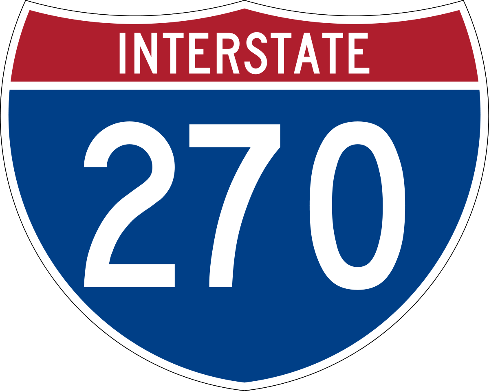
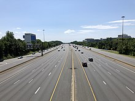
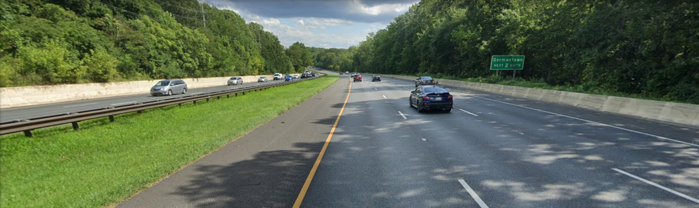
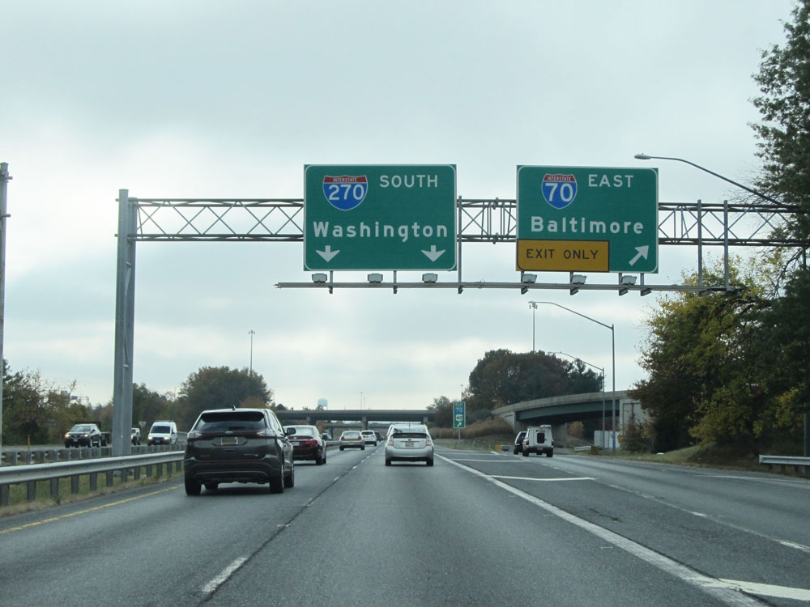

Interstate 270 in Maryland
Interstate 270 in Maryland is a road that starts in Frederick, MD at Interstate 70 which is in Frederick County, and ends in Bethesda, MD at Interstate 495 which is in Montgomery County. It passes through lots of populated cities in Montgomery County including Germantown, Gaithersburg, and Rockville just to name a few. Near I-495, the Highway splits. One side going to I-495 north going toward Silver Spring and College Park, and the other going to I-495 east going toward Northern Virginia.
Lanes
In Frederick where the north end is, it starts out with 4 lanes (2 on each side). It stays like that going south passing urbana and hyattstown, then in Clarksburg, it grows to Six lanes including one north HOV which we'll talk about leter. It passes through Germantown with six lanes, then at Middlebrook rd, it grows to 8 including that same HOV. At Watkins mill rd/Montgomery Village Ave is the Northern termunus of the North side Local lanes. The south side of 270 after diamond Ave grows to 5 lnaes, then less then a mile ahead, the South side Local lanes begin after passsing I-370. The South side HOV Lanes begin. It stays like that for a little bit. Less then 2-3 miles from the split, both sides grow to 5 lanes making for a grand total of 14 lanes including 2 HOV. Ahead of that the Local lanes and Normal lanes combine making 7 lanes on each side. The highway then splits. On the left side (going toward I-495 for Silver spring and College Park, there are six lanes including 2 HOV. This side passes 2 exits. Then it goes on to I-495 and MD 355. The right side going toward Northern VA has 4 lanes on the south side, 3 on the north, including 2 HOVs. The fourth lane ends on the south side. Then it meets up with I-495.
HOV Lanes
The HOV lanes on 270 during certain times can only be used when there are 2 people in the car, and by Motorcycles. The South lanes start at I-370 and end at I-495. They are active from 6:00 AM to 9:00 AM Weekdays. The North ones start at I-495 and end at MD 121 in Clarksburg. They are active from 3:30 PM to 6:30 PM Weekdays.
Pictures



Links for more info
AARoads
East Coast Roads
MD Roads